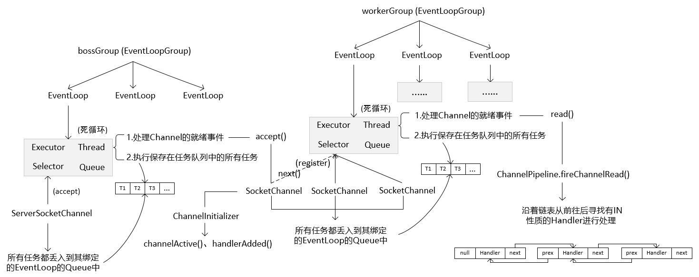

EventLoopGroup是一个存储EventLoop的容器，同时他应该具备线程池的功能。
由于EventLoopGroup间接继承ScheduledExecutorService接口，因此其实现类应该具备线程池的功能。
看一下NioEventLoopGroup的核心属性
// 默认的线程池大小
private static final int DEFAULT_EVENT_LOOP_THREADS;
static {
DEFAULT_EVENT_LOOP_THREADS = Math.max(1, SystemPropertyUtil.getInt(
"io.netty.eventLoopThreads", NettyRuntime.availableProcessors() * 2)); // CPU核数 x 2
}
// 存储EventLoop的数组
private final EventExecutor[] children;
构造方法
// 如果传入的nThread为空，那么使用默认的线程池大小（CPU核数 x 2）
protected MultithreadEventLoopGroup(int nThreads, ThreadFactory threadFactory, Object... args) {
super(nThreads == 0 ? DEFAULT_EVENT_LOOP_THREADS : nThreads, threadFactory, args);
}
// 最终的构建方法
protected MultithreadEventExecutorGroup(int nThreads, Executor executor,
EventExecutorChooserFactory chooserFactory, Object... args) {
// ......省略
children = new EventExecutor[nThreads]; // 初始化EventExecutor数组的大小
for (int i = 0; i < nThreads; i ++) {
boolean success = false;
try {
children[i] = newChild(executor, args); // 初始化EventLoop
success = true;
} catch (Exception e) {
throw new IllegalStateException("failed to create a child event loop", e);
} finally {
// ......省略
}
}
// ......省略
}
当创建NioEventLoopGroup实例后，就已经初始化好其EventExecutor数组的大小以及其存储的EventLoop。
EventLoop是EventExecutor的子接口。
看一下NioEventLoop的核心属性
private Selector selector;
private volatile Thread thread;
private final Executor executor;
private final Queue<Runnable> taskQueue;
static final int DEFAULT_MAX_PENDING_EXECUTOR_TASKS = Math.max(16,
SystemPropertyUtil.getInt("io.netty.eventexecutor.maxPendingTasks", Integer.MAX_VALUE));
每一个NioEventLoop都有一个Selector、Thread、Executor、Queue属性，当创建EventLoop实例后其thread属性仍为NULL，还没有创建线程。
看一下Channel的核心属性
private volatile EventLoop eventLoop; // 指向EventLoop的引用
每一个Channel都有一个指向EventLoop的引用，也就是说每一个Channel都会与一个EventLoop进行绑定，其eventLoop()方法返回此Channel绑定的EventLoop。
// 创建bossGroup和workerGroup
EventLoopGroup bossGroup = new NioEventLoopGroup();
EventLoopGroup workerGroup = new NioEventLoopGroup();
// 绑定端口，启动服务
serverBootstrap.bind(8888).sync();
AbstarctBootstrap的doBind()方法
private ChannelFuture doBind(final SocketAddress localAddress) {
final ChannelFuture regFuture = initAndRegister(); // 初始化Channel并将Channel注册到bossGroup中的EventLoop中的Selector
final Channel channel = regFuture.channel();
if (regFuture.cause() != null) {
return regFuture;
}
if (regFuture.isDone()) {
ChannelPromise promise = channel.newPromise();
doBind0(regFuture, channel, localAddress, promise);
return promise;
} else {
final PendingRegistrationPromise promise = new PendingRegistrationPromise(channel);
regFuture.addListener(new ChannelFutureListener() {
@Override
public void operationComplete(ChannelFuture future) throws Exception { // 当initAndRegister()方法完成后，由IO线程自动调用
Throwable cause = future.cause();
if (cause != null) {
promise.setFailure(cause);
} else {
promise.registered();
doBind0(regFuture, channel, localAddress, promise); // 进行绑定操作
}
}
});
return promise;
}
}
final ChannelFuture initAndRegister() {
Channel channel = null;
try {
channel = channelFactory.newChannel(); // 创建NioServerSocketChannel
init(channel); // 初始化Channel
} catch (Throwable t) {
if (channel != null) {
channel.unsafe().closeForcibly();
return new DefaultChannelPromise(channel, GlobalEventExecutor.INSTANCE).setFailure(t);
}
return new DefaultChannelPromise(new FailedChannel(), GlobalEventExecutor.INSTANCE).setFailure(t);
}
// config()方法返回AbstractBootStrap
// AbstractBootStrap存储bossGroup,ServerBootStrap存储workerGroup
ChannelFuture regFuture = config().group().register(channel);
if (regFuture.cause() != null) {
if (channel.isRegistered()) {
channel.close();
} else {
channel.unsafe().closeForcibly();
}
}
return regFuture;
}
EventLoopGroup的register()方法会通过选择器从EventLoopGroup中取出一个EventLoop，然后调用EventLoop的register()方法
// EventLoopGroup的register()方法
public ChannelFuture register(Channel channel) {
return next().register(channel); // 调用EventLoop的register()方法
}
/**
* 通过选择器从EventLoopGroup中取出一个EventLoop
*/
public EventExecutor next() {
return chooser.next();
}
SingleThreadEventLoop的register()方法
public ChannelFuture register(final ChannelPromise promise) {
ObjectUtil.checkNotNull(promise, "promise");
promise.channel().unsafe().register(this, promise); // 调用Channel的register()方法，传递当前对象，即当前EventLoop实例
return promise;
}
AbstarctChannel的register()方法
public final void register(EventLoop eventLoop, final ChannelPromise promise) {
if (eventLoop == null) {
throw new NullPointerException("eventLoop");
}
if (isRegistered()) {
promise.setFailure(new IllegalStateException("registered to an event loop already"));
return;
}
if (!isCompatible(eventLoop)) {
promise.setFailure(new IllegalStateException("incompatible event loop type: " + eventLoop.getClass().getName()));
return;
}
AbstractChannel.this.eventLoop = eventLoop; // 初始化Channel的EventLoop属性
// 第一次调用时，EventLoop中的thread为空，因此inEventLoop()返回false
if (eventLoop.inEventLoop()) {
register0(promise);
} else {
try {
eventLoop.execute(new Runnable() { // 调用EventLoop的execute()方法，并将注册操作作为一个任务，放入到Runnable实例中
@Override
public void run() {
// register0()方法最终将会调用doRegister()方法，将Channel注册到EventLoop中的Selector
register0(promise);
}
});
} catch (Throwable t) {
logger.warn("Force-closing a channel whose registration task was not accepted by an event loop: {}",AbstractChannel.this, t);
closeForcibly();
closeFuture.setClosed();
safeSetFailure(promise, t);
}
}
}
SingleThreadEventExecutor的execute()方法
public void execute(Runnable task) {
if (task == null) {
throw new NullPointerException("task");
}
boolean inEventLoop = inEventLoop();
addTask(task); // 将任务放入到当前EventLoop的任务队列中
if (!inEventLoop) {
startThread(); // 开启一个线程，最终调用doStartThread()方法
if (isShutdown()) {
boolean reject = false;
try {
if (removeTask(task)) {
reject = true;
}
} catch (UnsupportedOperationException e) {
}
if (reject) {
reject();
}
}
}
if (!addTaskWakesUp && wakesUpForTask(task)) {
wakeup(inEventLoop);
}
}
SingleThreadEventExecutor的doStartThread()方法
private void doStartThread() {
assert thread == null; // 当前EventLoop中的thread为空，输出结果肯定为true
executor.execute(new Runnable() { // 向线程池中提交一个任务，到这里才创建线程同时异步执行
@Override
public void run() {
thread = Thread.currentThread(); // 初始化EventLoop中的thread属性，即线程池中执行该任务的线程
if (interrupted) {
thread.interrupt();
}
boolean success = false;
updateLastExecutionTime();
try {
SingleThreadEventExecutor.this.run(); // 核心方法(当前对象为NioEventLoop)
success = true;
} catch (Throwable t) {
logger.warn("Unexpected exception from an event executor: ", t);
} finally {
// ......省略
}
}
});
}
NioEventLoop的run()方法
protected void run() {
for (;;) { // 死循环
try {
try {
switch (selectStrategy.calculateStrategy(selectNowSupplier, hasTasks())) {
case SelectStrategy.CONTINUE:
continue;
case SelectStrategy.BUSY_WAIT:
case SelectStrategy.SELECT:
select(wakenUp.getAndSet(false));
if (wakenUp.get()) {
selector.wakeup();
}
default:
}
} catch (IOException e) {
rebuildSelector0();
handleLoopException(e);
continue;
}
cancelledKeys = 0;
needsToSelectAgain = false;
final int ioRatio = this.ioRatio;
if (ioRatio == 100) {
try {
processSelectedKeys(); // 处理Channel的就绪事件，最终调用processSelectedKeysOptimized()方法
} finally {
runAllTasks(); // 执行保存在任务队列中的所有任务
}
} else {
final long ioStartTime = System.nanoTime();
try {
processSelectedKeys();
} finally {
// Ensure we always run tasks.
final long ioTime = System.nanoTime() - ioStartTime;
runAllTasks(ioTime * (100 - ioRatio) / ioRatio);
}
}
} catch (Throwable t) {
handleLoopException(t);
}
try {
if (isShuttingDown()) {
closeAll();
if (confirmShutdown()) {
return;
}
}
} catch (Throwable t) {
handleLoopException(t);
}
}
}
private void processSelectedKeysOptimized() {
for (int i = 0; i < selectedKeys.size; ++i) { // 遍历就绪的Channel对应的SelectionKey集合，如果Channel没有事件就绪则集合为空
final SelectionKey k = selectedKeys.keys[i];
selectedKeys.keys[i] = null;
final Object a = k.attachment();
if (a instanceof AbstractNioChannel) {
processSelectedKey(k, (AbstractNioChannel) a);
} else {
@SuppressWarnings("unchecked")
NioTask<SelectableChannel> task = (NioTask<SelectableChannel>) a;
processSelectedKey(k, task);
}
if (needsToSelectAgain) {
selectedKeys.reset(i + 1);
selectAgain();
i = -1;
}
}
}
NioEventLoop的processSelectedKey()方法
private void processSelectedKey(SelectionKey k, AbstractNioChannel ch) {
final AbstractNioChannel.NioUnsafe unsafe = ch.unsafe();
if (!k.isValid()) {
final EventLoop eventLoop;
try {
eventLoop = ch.eventLoop();
} catch (Throwable ignored) {
return;
}
if (eventLoop != this || eventLoop == null) {
return;
}
unsafe.close(unsafe.voidPromise());
return;
}
try {
int readyOps = k.readyOps(); // 就绪的事件
if ((readyOps & SelectionKey.OP_CONNECT) != 0) { // 连接就绪
int ops = k.interestOps();
ops &= ~SelectionKey.OP_CONNECT;
k.interestOps(ops);
unsafe.finishConnect(); // 处理连接就绪
}
if ((readyOps & SelectionKey.OP_WRITE) != 0) { // 写就绪
ch.unsafe().forceFlush(); // 处理写就绪
}
if ((readyOps & (SelectionKey.OP_READ | SelectionKey.OP_ACCEPT)) != 0 || readyOps == 0) { // 接收和读就绪
unsafe.read(); // 处理接收和读就绪
}
} catch (CancelledKeyException ignored) {
unsafe.close(unsafe.voidPromise());
}
}
当EventLoop中的线程处理完Channel的就绪事件后将会执行保存在任务队列中的所有任务，此时注册任务将被执行
private void register0(ChannelPromise promise) {
try {
if (!promise.setUncancellable() || !ensureOpen(promise)) {
return;
}
boolean firstRegistration = neverRegistered;
doRegister(); // 执行注册操作
neverRegistered = false;
registered = true;
pipeline.invokeHandlerAddedIfNeeded();
safeSetSuccess(promise); // ChannelFuture设置成成功状态，同时isDone()方法将返回true
pipeline.fireChannelRegistered();
if (isActive()) {
if (firstRegistration) {
pipeline.fireChannelActive();
} else if (config().isAutoRead()) {
beginRead();
}
}
} catch (Throwable t) {
closeForcibly();
closeFuture.setClosed();
safeSetFailure(promise, t); // ChannelFuture设置成失败状态，同时isDone()方法将返回true
}
}
AbstractNioChannel的doRegister()方法
protected void doRegister() throws Exception {
boolean selected = false;
for (;;) {
try {
// 将Channel注册到EventLoop中的Selector
selectionKey = javaChannel().register(eventLoop().unwrappedSelector(), 0, this); // 将Channel注册到Selector当中，当Channel执行完相应操作后，再向Selector传递需要监听此Channel的事件类型
return;
} catch (CancelledKeyException e) {
if (!selected) {
eventLoop().selectNow();
selected = true;
} else {
throw e;
}
}
}
}
回到一开始的AbstarctBootstrap的doBind()方法
private ChannelFuture doBind(final SocketAddress localAddress) {
final ChannelFuture regFuture = initAndRegister();
final Channel channel = regFuture.channel();
if (regFuture.cause() != null) {
return regFuture;
}
if (regFuture.isDone()) { // 由于注册任务是异步执行的，此时任务还未被执行，因此isDone()方法将返回false
ChannelPromise promise = channel.newPromise();
doBind0(regFuture, channel, localAddress, promise);
return promise;
} else {
final PendingRegistrationPromise promise = new PendingRegistrationPromise(channel);
regFuture.addListener(new ChannelFutureListener() {
@Override
public void operationComplete(ChannelFuture future) throws Exception { // 当注册任务被执行完毕后，由IO线程自动
Throwable cause = future.cause();
if (cause != null) {
promise.setFailure(cause);
} else {
promise.registered();
doBind0(regFuture, channel, localAddress, promise); // 进行绑定操作
}
}
});
return promise;
}
}
private static void doBind0(
final ChannelFuture regFuture, final Channel channel,
final SocketAddress localAddress, final ChannelPromise promise) {
channel.eventLoop().execute(new Runnable() { // 同样的，获取Channel绑定的EventLoop，调用EventLoop的execute()方法，并将绑定操作作为一个任务，放入到Runnable实例中
@Override
public void run() {
if (regFuture.isSuccess()) {
channel.bind(localAddress, promise).addListener(ChannelFutureListener.CLOSE_ON_FAILURE);
} else {
promise.setFailure(regFuture.cause());
}
}
});
}
public void execute(Runnable task) {
if (task == null) {
throw new NullPointerException("task");
}
boolean inEventLoop = inEventLoop(); // 由于当前方法是被处理注册任务的那个线程调用的，即EventLoop中的那个线程，因此inEventLoop()方法返回true
addTask(task); // 将任务放入到队列中，等待被执行
if (!inEventLoop) { // 不会执行，到目前为止仍然只开启了一个线程
startThread();
if (isShutdown()) {
boolean reject = false;
try {
if (removeTask(task)) {
reject = true;
}
} catch (UnsupportedOperationException e) {
}
if (reject) {
reject();
}
}
}
if (!addTaskWakesUp && wakesUpForTask(task)) {
wakeup(inEventLoop);
}
}
这就是Netty启动服务端后的核心流程
1.创建ServerSocketChannel并进行初始化。
2.调用bossGroup的register()方法，方法内部通过选择器从bossGroup中取出一个EventLoop，然后调用EventLoop的register()方法。
3.最终调用Channel的register()方法，方法中初始化Channel的eventLoop属性，然后将Channel注册到bossGroup中的EventLoop中的Selector作为一个任务，放入到Runnable实例中，然后调用EventLoop的execute(Runnable)方法。
4.execute()方法将任务放入到任务队列当中，然后向线程池中提交一个任务，此时才创建一个线程，同时初始化EventLoop中的thread属性。
5.任务中初始化EventLoop的thread属性，然后调用NioEventLoop的run()方法，死循环去处理Channel的就绪事件以及执行保存在任务队列中的所有任务。
6.当注册任务被执行完毕后，该线程会回调ChannelFutureListener中的operationComplete()方法，将绑定操作作为一个任务，然后调用EventLoop的execute(Runnable)方法。
7.重复第4步骤，将任务放入到任务队列中，由于当前线程就是EventLoop中的thread，因此inEventLoop()方法返回true，不会向线程池中提交任务，任务等待被EventLoop中的线程执行。
BossGroup中的EventLoop中的Thread正在死循环的处理Channel的就绪事件以及执行保存在任务队列中的所有任务
// 创建一个连接
SocketChannel socketChannel = SocketChannel.open();
socketChannel.connect(new InetSocketAddress(InetAddress.getLocalHost(), 8888));
BossGroup中的EventLoop中的Selector监听到ServerSocketChannel有接收就绪事件
// NioEventLoop的processSelectedKey()方法
if ((readyOps & (SelectionKey.OP_READ | SelectionKey.OP_ACCEPT)) != 0 || readyOps == 0) {
unsafe.read();
}
public void read() {
assert eventLoop().inEventLoop(); // 肯定是true
final ChannelConfig config = config();
final ChannelPipeline pipeline = pipeline();
final RecvByteBufAllocator.Handle allocHandle = unsafe().recvBufAllocHandle();
allocHandle.reset(config);
boolean closed = false;
Throwable exception = null;
try {
try {
do {
int localRead = doReadMessages(readBuf); // 读取Channel中的数据
if (localRead == 0) {
break;
}
if (localRead < 0) {
closed = true;
break;
}
allocHandle.incMessagesRead(localRead);
} while (allocHandle.continueReading());
} catch (Throwable t) {
exception = t;
}
int size = readBuf.size();
for (int i = 0; i < size; i ++) {
readPending = false;
pipeline.fireChannelRead(readBuf.get(i)); // 最终会调用ServerBootStrap的register()方法
}
readBuf.clear();
allocHandle.readComplete();
pipeline.fireChannelReadComplete();
if (exception != null) {
closed = closeOnReadError(exception);
pipeline.fireExceptionCaught(exception);
}
if (closed) {
inputShutdown = true;
if (isOpen()) {
close(voidPromise());
}
}
} finally {
if (!readPending && !config.isAutoRead()) {
removeReadOp();
}
}
}
NioServerSocketChannel的doReadMessage()方法
protected int doReadMessages(List<Object> buf) throws Exception {
SocketChannel ch = SocketUtils.accept(javaChannel()); // 接收连接，调用ServerSocketChannel的accept()方法
try {
if (ch != null) {
buf.add(new NioSocketChannel(this, ch)); // 将接收到连接放入到buffer中
return 1;
}
} catch (Throwable t) {
logger.warn("Failed to create a new channel from an accepted socket.", t);
try {
ch.close();
} catch (Throwable t2) {
logger.warn("Failed to close a socket.", t2);
}
}
return 0;
}
ServerBootstrap的register()方法
public void channelRead(ChannelHandlerContext ctx, Object msg) {
final Channel child = (Channel) msg;
child.pipeline().addLast(childHandler);
setChannelOptions(child, childOptions, logger);
setAttributes(child, childAttrs);
try {
// 调用workerGroup的register()方法，方法内部通过选择器从workerGroup中取出一个EventLoop，然后调用EventLoop的register()方法，最终调用AbstractChannel的register()方法
childGroup.register(child).addListener(new ChannelFutureListener() {
@Override
public void operationComplete(ChannelFuture future) throws Exception {
if (!future.isSuccess()) {
forceClose(child, future.cause());
}
}
});
} catch (Throwable t) {
forceClose(child, t);
}
}
AbstractChannel的register()方法
public final void register(EventLoop eventLoop, final ChannelPromise promise) {
if (eventLoop == null) {
throw new NullPointerException("eventLoop");
}
if (isRegistered()) {
promise.setFailure(new IllegalStateException("registered to an event loop already"));
return;
}
if (!isCompatible(eventLoop)) {
promise.setFailure(
new IllegalStateException("incompatible event loop type: " + eventLoop.getClass().getName()));
return;
}
AbstractChannel.this.eventLoop = eventLoop; // 初始化Channel的eventLoop属性
// 如果取出的是新的EventLoop，那么其thread属性为空，当前线程总是bossGroup中的EventLoop中的thread，因此inEventLoop()返回false。
// 如果取出的是旧的EventLoop，那么其thread属性不为空，当前线程总是bossGroup中的EventLoop中的thread，因此inEventLoop()返回false。
if (eventLoop.inEventLoop()) { // 总是返回false，当前线程总是bossGroup中的EventLoop中的thread，肯定与workerGroup中的任意一个EventLoop中的thread都不相等。
register0(promise);
} else {
try {
eventLoop.execute(new Runnable() { // 总是会执行该方法
@Override
public void run() {
register0(promise);
}
});
} catch (Throwable t) {
logger.warn("Force-closing a channel whose registration task was not accepted by an event loop: {}",AbstractChannel.this, t);
closeForcibly();
closeFuture.setClosed();
safeSetFailure(promise, t);
}
}
}
public void execute(Runnable task) {
if (task == null) {
throw new NullPointerException("task");
}
boolean inEventLoop = inEventLoop();
addTask(task); // 将任务放入到队列当中
if (!inEventLoop) {
startThread(); // 不管是新的还是旧的EventLoop都会调用该方法
if (isShutdown()) {
boolean reject = false;
try {
if (removeTask(task)) {
reject = true;
}
} catch (UnsupportedOperationException e) {
}
if (reject) {
reject();
}
}
}
if (!addTaskWakesUp && wakesUpForTask(task)) {
wakeup(inEventLoop);
}
}
private void startThread() {
if (state == ST_NOT_STARTED) { // 如果取出的是旧的EventLoop，那么其thread属性本身就不为空，因此其state属性就不等于ST_NOT_STARTED，因此不会开启新的线程，注册任务等待被EventLoop中的线程执行
if (STATE_UPDATER.compareAndSet(this, ST_NOT_STARTED, ST_STARTED)) {
boolean success = false;
try {
doStartThread(); // 取出的是新的EventLoop，其thread属性为null，同时其state等于ST_NOT_STARTED，因此需要开启线程，向线程池中提交一个任务，死循环去处理Channel的就绪事件以及执行保存在任务队列中的所有任务
success = true;
} finally {
if (!success) {
STATE_UPDATER.compareAndSet(this, ST_STARTED, ST_NOT_STARTED);
}
}
}
}
}
这就是Netty处理接收和读就绪事件的核心流程
1.客户端建立SocketChannel并进行连接。
2.bossGroup中的EventLoop中的Selector监听到ServerSocketChannel有接收就绪事件。
3.接收连接，最终调用workerGroup的register()方法，方法内部通过选择器从workGroup中取出一个EventLoop，然后调用EventLoop的register()方法。
4.最终调用Channel的register()方法，方法中初始化Channel的eventLoop属性，然后将Channel注册到bossGroup中的EventLoop中的Selector作为一个任务，放入到Runnable实例中，然后调用EventLoop的execute(Runnable)方法。
5.execute()方法将任务放入到任务队列中，如果取出的是新的EventLoop，那么其thread属性为空，此时将会开启线程，向线程池中提交一个任务，死循环去处理Channel的就绪事件以及执行保存在任务队列中的所有任务，如果取出的是旧的EventLoop，那么其thread属性不为空，任务等待被EventLoop中的线程执行。
1.当创建NioEventLoopGroup实例后，就已经初始化好其EventExecutor数组的大小以及其存储的EventLoop。
2.每一个NioEventLoop都有一个Selector、Thread、Executor、Queue属性，当创建NioEventLoop实例后，其thread属性仍为空。
3.每一个Channel都会与一个EventLoop进行绑定，其eventLoop()方法返回其绑定的EventLoop，同时该Channel会注册到其绑定的EventLoop的Selector中。
4.EventLoopGroup的register()方法会通过选择器从EventLoopGroup中取出一个EventLoop，然后调用EventLoop的register()方法。
5.EventLoop的execute()方法会将任务放入到任务队列当中，如果inEventLoop()方法返回false同时其thread属性为空，则创建一个线程，向线程池中提交一个任务（任务中初始化EventLoop中的thread属性，然后死循环去处理Channel的就绪事件以及执行保存在任务队列中的所有任务）